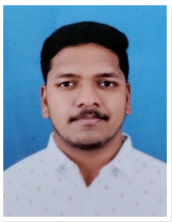

Vasagiri Sai Hemanth

Summary
Over the years, I have honed my critical thinking and problem-solving skills.
I'm a Hardworking & dedicated individual with plenty of knowledge & Hand's-on Experience on Mainframe Production systems.
Education
|Bachelor of Technology in Computer Science and Engineering|
|GITAM University, India|
|GPA – 8.31 June 2018- April 2022|
Work Experience
Associate Software Professional |DXC Technologies, Bangalore, India
June 2022 - Present
• Mainframe Operator.
• Perform system health checks regularly.
• Manage job demand, including restart, completion, and holding of jobs.
• Handle and resolve errors in jobs.
• Handle adhoc instances and requests as needed.
• Make modifications to the current plan when required.
• Recycle tasks as necessary.
• Monitor the console for any issues or alerts.
• Perform IPLs (Initial Program Loads) as needed.
• Create incidents using HPSM (Helpdesk/Service Management tool).
• Follow the escalation matrix for issue resolution.
• Provide coverage 24x7, 365 days a year.
Skills
• Software: Microsoft excel, Microsoft Office
• Programming and Development Languages: Java programming,MySQL,Python,JavaScript,HTML,CSS
• General Skills: Hard work, Critical thinking, Attention to detail, Organizational Skills, Leadership
• Certifications: Programming with Python,Database Management Essentials
Awards and Certifications
• I received the FY23 Q2 Champs Award, a testament to my outstanding contributions and dedication to excellence.
• Programming with Python,Database Management Essentials.
Others
©Vasagiri Sai. All Rights are Reserved